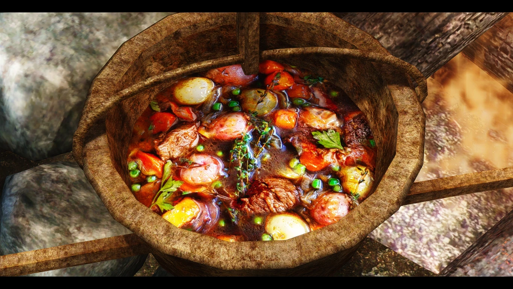

Beef stew recipe:

Ingredients:
- Raw beef
- Salt pile
- Carrot
- Garlic
Instructions:
- To make a delicious beef stew, begin by searing cubes of beef in a large pot with oil.
- Add chopped carrots, and smashed garlic.
- Let it simmer over the fire until the meat is tender and the flavors meld together.
- Serve it with a strong Nord Mead.